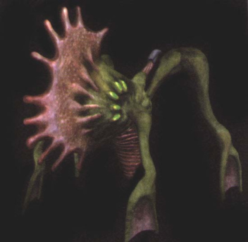

What are Mutated Monsters? Mutated monsters are a fusion of machines and living organisms that have lost their original function, influenced by the wild and natural selection, the process of a new species arising in nature, selecting other species who's adaptations are better suited for their survival and allowing these adaptations to be inherited by their offspring. Mutated monsters have continued to change over time, passing on their DNA from one generation to the next. They have evolved beyond their original purpose as lifeless living weapons and have gradually reverted back to their original animalistic forms and behaviors. Body parts from mutated monsters can be made into antidotes, medicines, tools and can also be used as a source of food. |
Due to natural selection, this pure type monster has mutated, losing most of its bone-like armor throughout the generations, revealing its true animal origins. |
 This monster, over time, has completely reverted back into its true animal form. No bone-like armor is present on its body. |